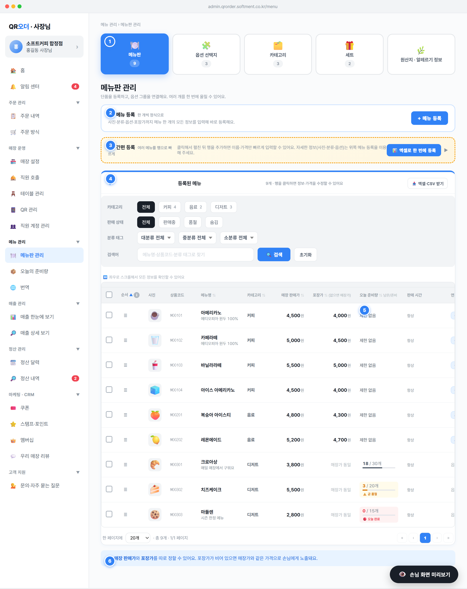

menuNavTabs()) — 같은 '메뉴 관리' 그룹 내에서 메뉴판 / 옵션 선택지 / 카테고리 / 세트 / 원산지·알레르기 정보 사이를 이동한다 (spec/02-menu §0.1).MENUS, 옵션=OPT_GROUPS, 카테고리=CAT_MENU, 세트=SETS, 원산지=STORE_ORIGIN.setSection('menu'|'option'|'category'|'set'|'origin') 호출 → 해당 섹션으로 라우팅(별도 render 함수). 핀 번호 n=1 대상은 탭바 전체.state.section===t.key인 탭에 .on 클래스(파란 강조) 부여..mnav-cnt): 메뉴판·옵션·카테고리·세트 탭에만 표시하며 각각 MENUS.length / OPT_GROUPS.length / CAT_MENU.length / SETS.length 실시간 값. 원산지 탭은 cnt 미정의라 배지 없음.tabs[] 배열(렌더 시 즉시 계산). 배지는 별도 API 없이 각 컬렉션 length로 파생.DATA_MODEL.md §2(메뉴/옵션/카테고리/세트/원산지) 참조..menu-reg-card), 보조문구 "사진·분류·옵션·포장가까지 메뉴 한 개의 모든 정보를 입력해 바로 등록해요."openMenuDetailNewModal()로 신규 입력 모달 오픈(편집 모달 renderMenuEditModal과 동일 폼, 신규 모드).+ 새 카테고리) → 🏷️ 분류 태그 ①②③(선택·손님 미노출) → 판매 상태 → 설명 → 1회 주문 최대 수량 (spec/02-menu §1.5.3).MENUS에 push, success 토스트 + dirty 해제 + 신규 행 플래시(_flashMenuId).status='판매중', opt=[], takeoutPrice=null, maxQty=null, img=''(저장 시 빈값이면 🍽️ 대체 가능).name string(1~30) 필수, 빈 값 불가. price int 필수, 0 이상~1억 미만 정수. takeoutPrice int|null(매장가보다 비싸면 저장 전 확인). cat는 CAT_MENU.name 참조 필수.code(상품코드): 영문 대문자 1자(M) + 숫자 5자리 = 6자, 매장 내 유니크(메뉴·옵션·세트 공통 풀), ⚙️ genCode('M') 자동생성 또는 직접 지정 (spec/02-menu §1.2.2, SPEC 08 §5.3).catL2/catL3/tag3(어드민 검색·필터 전용, 편집 모달에서 datalist 자동완성). 노출/미노출 기준은 §1.3.unit_price_snapshot 유지 — STATES §9).null(매장가 동일 적용)..bulk-collapse). 실제 UI 라벨 '⚡ 간편 등록 — 여러 메뉴를 행으로 빠르게'.state.menuBulkOpen, 화살표 ▼/▶). 닫힌 상태 보조문구 "클릭해서 펼친 뒤 행을 추가하면 이름·가격만 빠르게 입력할 수 있어요…", 작성 중이면 "작성 중 · N개 행 · 저장 전엔 손님 화면에 안 보여요".addMenuBulkRow) → 기본값 행 추가: {code:'',name:'',price:0,takeoutPrice:null,cat:'',desc:'',img:'',status:'판매중'}. 전체 행 삭제는 확인 후 비움.genCode('M') 자동, 입력값 자동 대문자화), 메뉴 이름(필수), 매장 판매가(필수), 포장가(비우면 매장가), 카테고리(미지정 허용), 설명, 사진(클릭 시 SAMPLE_ICONS 순환), 상태, ✕ 행 삭제.saveMenuBulk): name && price>=0인 행만 MENUS에 추가, 코드 미입력 시 자동생성, 카테고리 미지정 시 첫 카테고리 또는 '미분류'. 저장 후 행 비우고 토스트 "새 메뉴 N개를 저장했어요".openMenuExcelModal): 엑셀 양식 다운로드 후 작성→업로드 일괄 import. 컬럼 순서는 코드·이름·매장가·포장가·카테고리·설명·상태·최대수량·대/중/소분류.state.menuBulkRows[]에 임시 보관되며 저장 전 MENUS 미반영.null.menuExportRows)와 동일 → 받은 파일 수정 후 재업로드 가능. import는 확인 후 정책에 따라 추가/덮어쓰기..menu-saved-panel)이자 메뉴 운영의 중심. 컬럼: 선택 · 순서(≡·ⓘ) · 사진 · 상품코드 · 메뉴명(+'최대 N개' 배지+설명) · 카테고리 · 매장 판매가(+해피아워) · 포장가(없으면 '매장가 동일') · 오늘 준비량(남은/준비+진행바) · 판매 시간 · 연결된 옵션 · 상태(pill) · 추가 설정 ▼.openMenuEditModal(id) 정보·가격 수정 모달. 추가 설정 ▼(state.menuActionOpen): 메뉴 정보·가격 수정 / 🧩 옵션 그룹 연결(openOptLinkModal) / 🕒 판매 시간(openScheduleModal) / 🔥 해피아워 할인(openDiscountModal) / 📋 복제하기(duplicateMenu) / ✕ 삭제(deleteMenu).showOrderHelp() 안내. 순서는 last-write-wins (SPEC §1.7).sortMenu): 순서/메뉴명/카테고리/매장가/포장가/오늘준비량/상태 토글(asc↔desc, 문자열은 ko 로케일). 필터: 카테고리 칩, 판매상태 칩(전체·판매중·품절·숨김), 분류태그 대/중/소 드롭다운, 검색어(메뉴명·상품코드·분류태그) → applyMenuFilters/resetMenuFilters.menuRowsPerPage, 기본 20) + 페이지 이동(« ‹ 1..5 › »). 오늘 준비량 셀 클릭 → setSection('stock') 이동.menuSel): 📋 복제 / 💰 가격 조정(openBulkPriceModal) / 🗂️ 카테고리 이동(openBulkCatModal) / ✕ 삭제(bulkDeleteMenus) / 선택 해제. 📥 엑셀·CSV 받기(openMenuExport) → xlsx/csv 택1 다운로드, export 컬럼=import 양식과 동일.MENUS[]. 표시값은 ensureMenuExtras(r)로 기본값 보강, 상태는 effectiveStatus(r) 합성, 가격은 해피아워 적용 시 discountAmt 반영.getMenuStock(id)(MENU_STOCK) 연동: 남은/준비+진행바, 잔여 0이면 '🔴 오늘 완료', 임계(lowAlert) 이하면 '⚠️ 곧 품절'.unit_price_snapshot) 유지 (STATES §9). 순서 변경은 last-write-wins (SPEC §1.7).menuExportRows 컬럼: code·name·price·takeoutPrice·cat·desc·status·maxQty·catL2·catL3·tag3. 정렬/검색/페이징 공통 규칙 SPEC §2.6.cleanupAfterMenuDelete): OPT_GROUPS.links, MENU_STOCK.items, SETS…candidates에서 해당 메뉴 참조 제거(기본 후보 비면 다른 후보 승격).effectiveStatus)를 표시·전환한다: 판매중 / 수동 품절(일시·완전) / 자동 품절 / 숨김.status·manualSoldOut·재고)을 우선순위로 하나의 결과로 정리해 혼선을 막는다.manualSoldOut=true → 수동 품절(soldOutKind temp=일시/full=완전) ② stock!=null && sold>=stock → 자동 품절(준비량 소진) ③ status='숨김' → 숨김 ④ status='품절' → 품절(레거시) ⑤ 그 외 → 판매중 (spec/02-menu §1.4, SPEC §2.3).manualSoldOut ON). 추가 설정의 품절/준비량 흐름과 연동. 일시/완전 품절(soldOutKind) 선택 가능.done(초록), 품절(일시/완전)=partial/cancel, 숨김=hold(회색).schedule) 미충족 시간대에는 판매중이라도 손님 화면 회색 처리(상태 pill과 별개 노출 규칙).status enum(판매중|품절|숨김, 기본 판매중), manualSoldOut bool(기본 false), soldOutKind enum(temp|full, 기본 temp), stock/sold(int|null/int) — MENU_STOCK 연동.manualSoldOut 자동 해제 → 다음날 자동 재판매 (SPEC §2.5, spec/02-menu §1.2.3).status를 available/hidden 2값 + 품절은 manualSoldOut·재고 파생으로 정규화 권장, 레거시 '품절'은 manualSoldOut=true로 마이그레이션 (spec/02-menu §7-1, SPEC §2.3).paused)된 카테고리 소속 메뉴는 상태와 무관하게 손님 화면에서 빠짐 (카테고리 화면 §3, 안내 "…자동으로 빠지거나 회색 처리돼요")..banner-info) — 매장 판매가와 포장가를 따로 정할 수 있음을 알리는 보조 안내.null) 포장 주문 시 매장가를 그대로 적용.menu.takeoutPrice int|null(기본 null). 0 이상, 매장가보다 비싸면 저장 전 확인 (spec/02-menu §1.2.1).null→매장가, 주문 방식에서 포장 할인 OFF면 미적용(매장가로 노출).Payment.status=paid 여부로 판단).